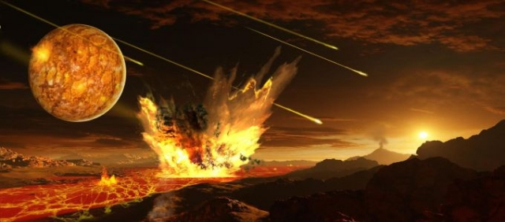
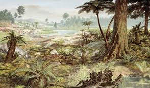
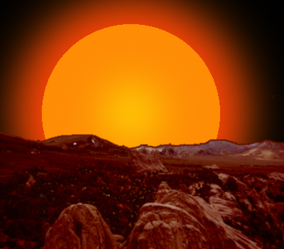

A Világegyetem valószínűleg körülbelül 13,8 milliárd éve keletkezett. A Naprendszer mintegy 4,6 milliárd éve alakult ki; a Föld születését is ez időre teszik. Kb. 4,6 milliárd évesek a Hold legidősebb kőzetei és a legidősebb, a Földre hullott meteoritok is. A legidősebb földi kőzetek kora körülbelül 4 milliárd év.A Föld a keletkezése után forró, olvadt állapotban volt, és anyagai sűrűségüknek megfelelően gömbhéjakba rendeződtek. A Föld magjában föltehetőleg a viszonylag sűrű vas és nikkel halmozódott fel, kívül pedig a ritka, gázokból álló légkört találjuk.

Az élővilág fejlődése:kambrium: a gerinctelen állatoknál megjelent a szilárd váz, a kambrium végére kialakultak a moszattörzsek és a gerinctelen állatok törzsei. Jellegzetes fosszíliák ebből az időszakból a trilobiták (háromkaréjú ősrákok).ordovícium: a zátonyképző korallok elterjedése;szilur: megjelentek az első szárazföldi növények;devon: a szárazföld meghódítása a növények (ősharasztok) és az állatok (ízeltlábúak) által. Megjelentek a halak.karbon: az északi félgömbön mocsárerdők főleg fatermetű harasztokból (maradványaikból keletkezett a földi kőszénkészlet jelentős része). A kétéltűek elterjedése.perm: a nyitvatermők és a hüllők elterjedése.A paleozoikum végén az állatvilág kb. 50%-a kihalt (perm–triász kihalási esemény).
Éghajlat:Meleg, jégkorszak nem volt.
Az élővilág fejlődése:növények: a nyitvatermők (fenyők) virágkora (jura időszak), a zárvatermők megjelenése és elterjedésének kezdete (kréta időszak);állatok: a gerinctelenek közül jellemzőek az egysejtű foraminiferák ("likacsoshéjúak"), a puhatestűek (csigák, kagylók, ammoniteszek), ízeltlábúak (rákok, rovarok). A gerincesek közül a kétéltűek virágkora a triászban, a hüllőké pedig a jura és kréta időszakban volt. A madarak (Archeopterix=ősmadár) a jura időszakban, az emlősök a triász és jura időszak határán jelentek meg.A középidő végén az állatvilág jelentős része kihalt (kréta-paleogén kihalási esemény).

Körülbelül ötmilliárd év múlva olyan lesz a Nap, mint egy most lefényképezett távoli csillag. A közepes tömegű csillagok közé tartozó Nap magjában körülbelül ötmilliárd év múlva elfogy a hidrogén, és megkezdődik a hélium fúziója. A hirtelen felszabaduló sok energia miatt csillagunk külső burkai kiterjednek: a vörös óriássá váló Nap határai valahol a Föld pályájánál lesznek. Ez az élet végét is jelenti bolygónkon. Ezután a Nap külső burkai leszakadnak, és csak a magja marad vissza, egy Föld nagyságú fehér törpecsillag formájában.
